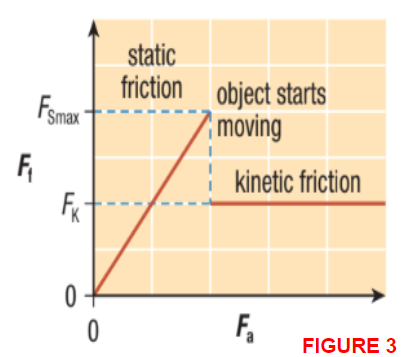

Friction
Callout
Friction in real-life
By adding wax to skis, a skier can reduce friction between the skis and the snow. The type of wax used depends on the snow temperature. (Refer to Figure 1a).

Synovial fluid helps reduce friction between the moving bones. When there is too much friction, these joints can become very painful.
(Refer to Figure 1b).

Static Friction

- the force exerted on a stationary object by a surface that prevents the object from starting to move.
- In this case, the object remains at rest because the static friction is equal in magnitude and opposite in direction to the applied force.
Eventually, the applied force becomes large enough to start moving the object.
This means a maximum amount of static friction must be overcome to cause a stationary object to begin to move.
Kinetic Friction
- force exerted on a moving object by a surface, and acts opposite to the direction of motion of the object.
- As the applied force continues to increase, the object begins to accelerate.
- If the applied force decreases and the object starts moving at a constant velocity, the applied force must be equal in magnitude to the kinetic friction.
- Figure 3 shows the graph of the force of friction versus the applied force during this experiment.

Notice that during the time that static friction acts on the object, Fs equals Fa. So, during that time, the graph is a straight line starting from the origin with a slope of 1.
Once the object starts to move, the friction drops suddenly.
Different Types of Kinetic Friction
Tabs

- If an object is scraping or sliding across a surface, we call it sliding friction.

- If the object is round and it rolls across a surface, it is called rolling friction.

- involved when a boat goes through water, or a plane moves through the air.
Coefficients of Friction
Many factors affect the force of friction acting on an object.
The magnitude of friction acting on an object may depend on:
- The mass of the object
- The type of material the object is made of
- The type of surface the object is in contact with.
When dealing with air resistance, the speed of the object and the shape of the object also have an effect.
In this section, we will deal only with friction acting on an object in contact with horizontal surfaces. The only applied forces acting on the object will be horizontal.
The coefficient of friction is the ratio of the magnitude of the force of friction, Ff, acting on an object to the magnitude of the normal force, FN, acting on the object (Refer to Figure 4).
FIGURE 4 An FBD of an object pulled by a horizontal force. The magnitudes of the force of friction and the normal force are used to find the coefficient of friction.

Coefficients of Friction
The Greek letter 𝜇 is used to represent the coefficient of friction. We define the coefficient of friction mathematically as:
Where:
- is the magnitude of the force of friction acting on an object in Newton
- is the magnitude of the normal force acting on the object in Newton
- 𝜇 is the coefficient of friction.
First, determine the maximum force of static friction in that particular situation. For almost all situations, the force required to start an object moving is greater than the kinetic resistance acting on the object when it is moving. This means that is usually slightly greater than
Since there are two types of friction (static and kinetic), there are two coefficients of friction. One is the coefficient of static friction, which represents the ratio of to normal force. The coefficient of static friction is represented by the symbol
The other is the coefficient of kinetic friction, which represents the ratio of FK to normal force. The coefficient of kinetic friction is represented by the symbol
Callout
Since the maximum force of static friction is usually greater than the kinetic friction, the coefficient of static friction is usually greater than the coefficient of kinetic friction. The corresponding equations are:

Callout
Since we will deal only with friction acting on an object in contact with horizontal surfaces, the coefficient of friction between an object and a surface depends only on the type of materials. Results can be affected by the condition of the surface, including the cleanliness of the surface, whether the surface is wet or dry, and the roughness of the surface. This means one scientist may obtain a different coefficient of friction than another scientist even when neither one has made any mistakes.
Table 1. Approximate Coefficients of Kinetic ( ) and Static Friction ( )